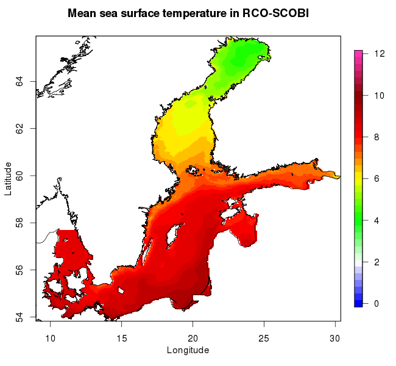

3rd Baltic Earth Winter School¶
Analysis of Climate Variability¶
Students will be introduced to the analysis of climate variability from years to millennia as recorded from instrumental data, historical documents and proxy data such as tree ring data or sediment cores. The focus will be on the climate of the Baltic Sea region but an overview on global climate variability and processes in the atmosphere, ocean, sea-ice and land surface relevant for the climate system will be introduced as well. For the analysis of climate variability, both statistical methods and numerical modeling are used. Methods for the detection of systematic changes in climate and for the attribution of drivers to these changes will be presented and discussed. The course will introduce fundamentals of statistics, time series analysis, multivariate data analysis, uncertainty analysis in statistical methods and strategies of statistical analysis.
Programming language
This winter school will introduce all students to R.
Methods for the detection of systematic changes in climate and for the attribution of drivers to these changes will be presented and discussed. The course will introduce fundamentals of statistics, time series analysis, multivariate data analysis, uncertainty analysis in statistical methods and strategies of statistical analysis.

The Baltic Sea is a relatively young marginal sea of the Atlantic Ocean that was formed after the last deglaciation. During the Last Glacial Maximum, a thick ice sheet covered the whole basin. After all ice had melted, first the Baltic Ice Lake was formed, then the Yoldia Sea and Ancylus Lake and, finally, the Littorina Sea (the Baltic Sea we know today), as a consequence of the interplay between sea level rise and land uplift which controls the water exchange between the Baltic Sea and the world ocean. The course will introduce the history of the Baltic Sea. In addition to lectures, tutorials, exercises and literature studies, the course will give students the opportunity to discuss the learned topics further during group exercises.